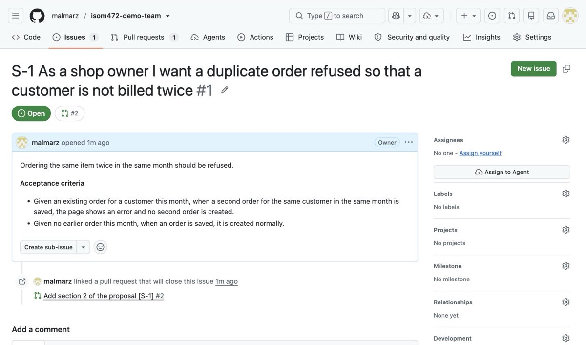

Your team has one repository, and everything in this course happens inside it. It is not where finished work is filed at the end. It is where the work is done, and it is what is read when the work is graded. This page describes its shape: how branches and commits are named, what a pull request must contain, what a review is, where story IDs come from, which tags are graded, and which file goes where.
What the repository is
One repository per team, created by the instructor. There is no individual repository. Every member works in the same one, under a personal GitHub account, for the whole semester. Getting access is covered in the setup guide.
Grading reads the repository. Not a submitted document, not a folder of files emailed on the day — the repository, as it stands at a named moment. That has one consequence worth stating before anything else on this page.
Every student commits under their own account. If your activity cannot be seen in the repository, you did not participate.
The team repository is public. Anything committed to it can be read by anyone on the internet. It is public because GitHub Pages serves the team's proposal page, and later the team's running system, from it at a public address.
Never commit a password, an API key, a Supabase service key, a
.env file, or a client's real personal data. If real client
data is needed to test something, use invented data that looks like it.
A key committed once stays in the repository's history even after the file is deleted. Deleting it does not remove it. If a key or real client data reaches the repository, tell the instructor immediately rather than quietly removing it.
Six words, and the loop they make
These six words are used on every page of this course and in every class. They mean exactly this and nothing looser.
| Word | What it means |
|---|---|
| Repository | One per team; everything the team produces lives in it. |
| Branch | A line of work that does not disturb anyone else's. |
| Commit | A saved point, carrying your name and a message. |
| Pull request | Here is my work. Please look at it before it becomes real. |
| Review | A teammate reads it and says what they checked. |
| Merge | It becomes part of the real thing. |
The repository is where the loop runs. The loop itself, every time, in this order: branch › commit › pull request › review › merge. The sections below take those words in that order, with merge at the end of the review section.
This page is about shape and rules. The mechanics — getting the repository onto your laptop, committing, pushing, and publishing a page from it — are in the publishing guide, and are not repeated here.
The three rules
Three rules govern how work moves through the repository. They are not negotiable per team.
- One branch per story, named after the task. Not one branch per person, and not one branch for the whole sprint.
- Nobody merges their own work. A teammate reads it and says what they checked. This holds for every member, including whoever wrote the story. Approving and merging are the same bar here: on your own pull request you do neither. GitHub enforces one half and not the other — it blocks the approval and allows the merge — so the merge half is on you, and it is visible to whoever grades the repository.
- The Client Lead accepts. A story is not done because the person who built it says so.
Rule 1 is what the branches section below is about. Rules 2 and 3 are what the review and merge sections are about. Who the Client Lead is, and what the other roles own, is on the roles page.
The board: one issue per story
The board is the repository's issue list. There is no second place to look and no separate tool. One story is one GitHub issue in the team repository, and the backlog is those issues in order.
The story ID is S- plus the issue number. Issue
#14 is story S-14. GitHub gives the number when the issue is opened, so there is
nothing to maintain and no two stories can carry the same ID.
The issue title starts with the ID, then the story:
S-14 As a sales clerk I want a duplicate order refused so that the client is not billed twice
This screenshot comes from a worked example repository,
so the numbers in it differ from the S-14 example used
throughout this page — there the story is S-1 and the
pull request is #2. The shape is identical. You can open
and read the whole loop — one issue, one branch, one pull request,
one review, one merge — at
https://github.com/malmarz/isom472-demo-team.
The rest of the loop on screen, from the pull request through the review
to the merge, is in the
publishing guide.
- The Client Lead owns the order. The backlog is the issues, ordered, and that order is the Client Lead's call.
- The split is the assignee. Whoever holds a story this sprint is the person assigned to its issue. There is no other record of who is on what.
-
Bugs are issues too, carrying a
buglabel, filed by the Quality Lead with steps to reproduce and tracked to a disposition.
The number then carries through everything else on this page:
Issue #14 S-14, the story
branch s-14-duplicate-order-check
commit feat(orders): add duplicate-order check [S-14]
pull request Closes #14
Closes #14 in the pull request is the link back: when the pull
request is merged, GitHub closes the issue. That is how the work traces back to
the board, and it is why the branch and the commit carry the ID.
Branches
A branch is a line of work that does not disturb anyone else's. You open one when you pick up a story, and it closes when the story is merged. One branch, one story, every time.
The name has a fixed form, so nobody has to think about it:
<story-id>-<short-name-of-the-task>Lower case, hyphens between words, no spaces, no capital letters, and the story ID first. Three or four words after the ID is enough. The point of the name is that a teammate scanning the branch list can tell what is in flight and which story it belongs to, without opening anything.
s-14-duplicate-order-check
s-27-order-history-screen
Story ID first, then what the work is. Both are readable in the branch list and both trace back to an issue on the board.
Duplicate Order Check FINAL
Spaces, capitals, no story ID, and “FINAL” means nothing to anyone else. Nothing about this name says which story it delivers, so the work cannot be traced back to the board — which is the one thing the name is for.
Commits
A commit is a saved point, carrying your name and a message. Commit often and in small pieces. A commit message has a type, a scope, and what changed — then the story ID, so the work traces back to the board.
This is the form, and it is the only worked example you need:
feat(orders): add duplicate-order check [S-14]
feat is the type. (orders) is the scope — the part
of the system this touches. Then, in plain words, what changed. Then the story ID
in brackets.
The specification for the type and scope is Conventional Commits. It is one short page, and it is a required reading for this course: https://www.conventionalcommits.org/en/v1.0.0/. Read it once and the form stops being something you have to remember.
fixed stuff
No type, no scope, no statement of what changed, and no story ID. Six months of these is a repository nobody can read, including the team that wrote it. Teams have been marked down for exactly this message.
Commit under your own GitHub account, always. Your commits are the record of what you did, and they are the only record that exists.
Pull requests
A pull request says: here is my work, please look at it before it becomes real. You open one when the branch is ready, and a teammate reads it before anything is merged. Nobody merges their own work.
What a pull request must contain
- A title in the same form as a commit message, carrying the story ID.
- What changed, in two or three lines of plain words.
-
The issue it closes, written as
Closes #14, so the story closes on the board when the pull request is merged. - How to check it — what the reviewer opens, what they do, and what they should see. Without this, a reviewer can only read the code and guess what it was supposed to do.
- The AI-Assisted line. On every pull request, with no exceptions.
The AI-assistance declaration
Every pull request declares AI use: the tool, its output, your changes. One line:
AI-Assisted: <tool> / <what it produced> / <what you changed>or, when you wrote it yourself:
AI-Assisted: noneBoth are fully legitimate. Not declaring is the offence. AI use is expected across this course. What is mandatory is declaring which was used, not the choice itself. The declaration is not a confession. It is the record of who checked what, and it is the only one that exists.
A worked pull request
feat(orders): add duplicate-order check [S-14]
What changed
- A second order for the same customer in the same month is now refused.
- The message names the earlier order and the date it was placed.
Closes #14.
How to check this
1. Open the orders screen and place an order for any customer.
2. Place a second order for the same customer in the same month.
3. You should see the second order refused, naming the first order's date.
4. Place one for the following month. It should go through.
AI-Assisted: Antigravity / generated the check and its message / rewrote the month
comparison, which compared calendar months rather than the order dates, and added the
case where the earlier order was cancelledNote what the AI-Assisted line does here. It names the tool, says what the tool produced, and says what the author changed and why. A teammate reading that line knows where to look hardest.
Review
A review is a teammate reading your work and saying what they checked. Every member reviews teammates' pull requests. Nobody approves their own. A review is not a formality before a merge — it is the merge's only safeguard.
A review that said nothing is a review that did not happen. Say what you opened, what you did, what you saw, and what you did not check. The last part matters as much as the rest.
“I checked this against the acceptance criteria on S-14. I placed two orders for the same customer in the same month and the second was refused, with the first order's date in the message. An order for the next month went through. I did not test a customer with no earlier orders at all. The AI-Assisted line says the cancelled-order case was added, so I opened that part and a cancelled order is excluded from the check. Approving.”
“Looks good to me.”
Nothing was opened, nothing was run, and nothing was claimed. If the check is broken, this reviewer's name is on it and they have no answer. It is also the reason the failure will surface in a delivery session rather than in a pull request, which is the expensive place for it to surface.
When the reviewer is satisfied, the work is merged: it becomes part of the real thing. Acceptance of the story is separate, and it belongs to the Client Lead. A story is not done because the person who built it says so.
Interface contracts are agreed the same way. The card arrives in a pull request and the other party's review is the agreement — a card nobody reviewed is a plan, not a contract.
Phase tags
Each phase is tagged in the repository at its due date, and the tag is what gets graded. Not a submitted document, not a slide deck, not the state of the repository whenever it is next looked at: the repository as it stands at that tag.
The tags are named phase-1, phase-2,
phase-3, phase-4, phase-5 and
phase-6. The Phase Lead for that phase creates the tag and pushes it.
The due date for each phase is on the
deliverables page.
Tags are made in Antigravity. Open the team repository there and ask the agent, in these words:
Tag the current commit on main as phase-1 and push the tag.You should see the tag listed on the repository's tags page on GitHub, pointing at the commit you meant it to point at. Check this. A tag made and not pushed exists only on one laptop.
Work pushed after the tag is not in the tag, and is therefore not
graded for that phase. A branch that was still open, a pull request
that had not been reviewed, a file finished an hour later — none of it is
in the tag. Merge before the tag, not after it, and have the Phase Lead tag
once everything that counts is on main.
The folder layout
Your repository has this shape. Create it in the first phase and keep it. Files that are somewhere else are files nobody finds.
your-team-repository/
├── README.md
├── docs/
│ ├── index.html the published proposal page
│ ├── proposal.md the judged proposal
│ ├── finops-ledger.md one section per sprint
│ ├── contracts/
│ │ └── <name_of_what_passes>.md one file per boundary
│ └── delivery-notes/
│ ├── phase-1.md
│ └── … through phase-6.md
├── supabase/
│ └── migrations/ one SQL file per change to the tables
├── prototype/ the HTML prototype and the screen list
└── (your application code)| Path | What it is | Owner |
|---|---|---|
README.md |
The front page: what the system is, who the client is, and a link to the published proposal. | The team |
docs/proposal.md |
The proposal, judged against the bar in the proposal template; the backlog behind it is the Client Lead's. | Client Lead |
docs/index.html |
The same content published as a page, served at the repository's /docs/ address — see the publishing guide. The bare repository address is kept for the running system. |
Client Lead |
docs/finops-ledger.md |
One section per sprint. It lives in the repository and is committed, never kept elsewhere. | FinOps Lead |
docs/contracts/<name>.md |
One file per boundary, named after the thing that passes, agreed by the other party's review. | The two members whose work meets |
docs/delivery-notes/phase-N.md |
That phase's artifact: what was delivered, who did what, and links to the stories. | Phase Lead |
supabase/migrations/ |
The SQL that creates and changes the tables, one file per change. Antigravity writes the migration file, the Data Lead runs the same SQL in the Supabase SQL editor, and the file is committed — so the repository and the database say the same thing. | Data Lead |
prototype/ |
The HTML prototype and the screen list. | Design Lead |
| Your application code | The system itself, at the top level of the repository. | Every member delivers stories end to end |
Bugs are not files. Bug reports are
GitHub Issues in this repository, not documents in
docs/. The Quality Lead files them with steps to reproduce and
tracks each one to a disposition: fixed, deferred, or not a defect. An issue
with no disposition is an open question, and open questions are read as such.
Attribution
Everything above exists to answer one question at the end of the semester: who did what. The repository answers it, and nothing else does.
- Every story is an issue assigned to its owner, and the branch names it.
- Every commit carries the name of the account that made it.
- Every pull request declares AI use: the tool, its output, your changes.
- Every merge carries the name of the teammate who reviewed it.
Help given verbally leaves no evidence. Code pushed under a teammate's name is that teammate's evidence, not yours. If two people genuinely worked together, both names go on the commit — that is what co-authorship is for, and it costs one extra line.
One last thing, so it is not misunderstood: misconduct in this course is the inability to explain your own system, not the use of a tool. Use whatever helps you. Declare it, review each other's work, and be able to explain what is in the repository with your name on it.